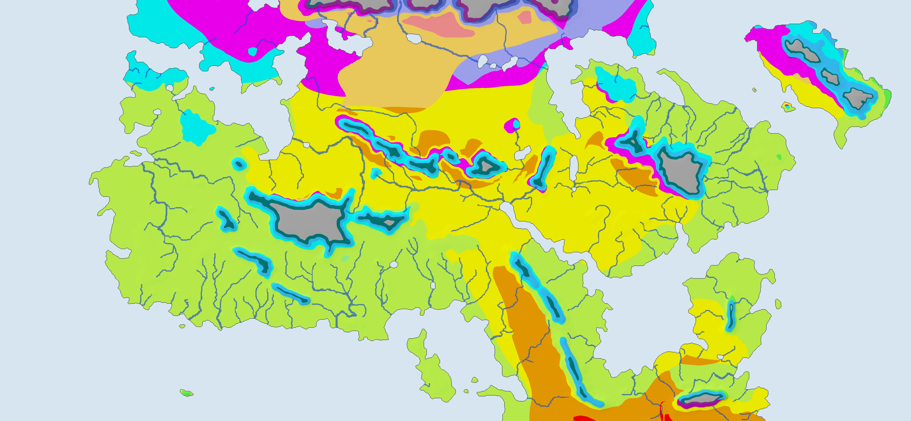
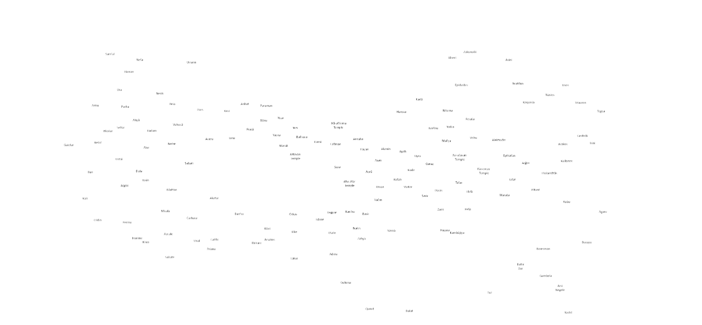
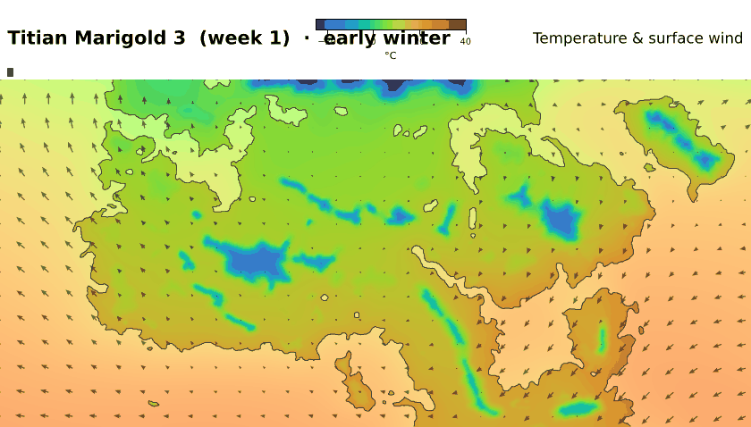
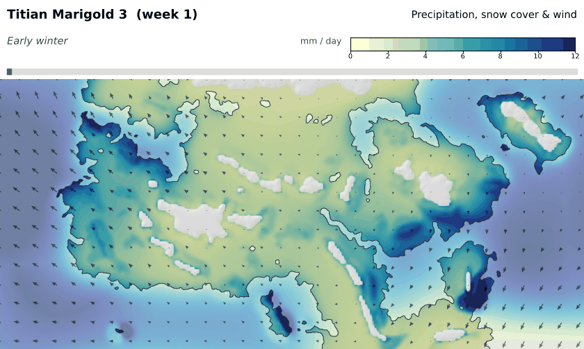
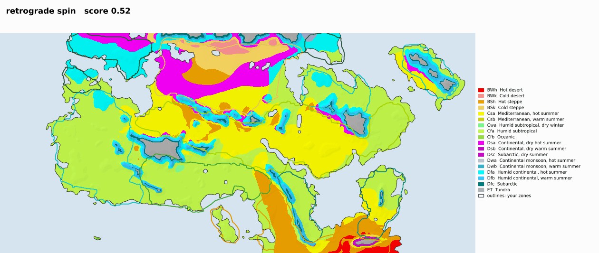
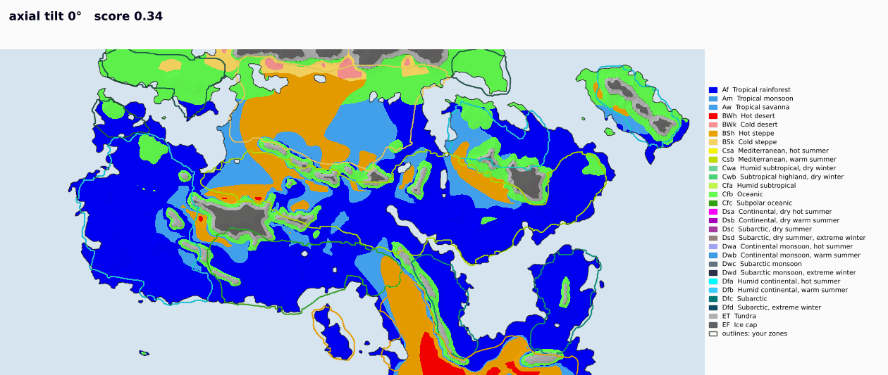
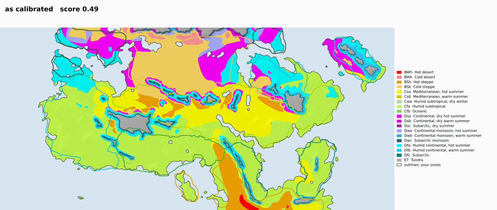
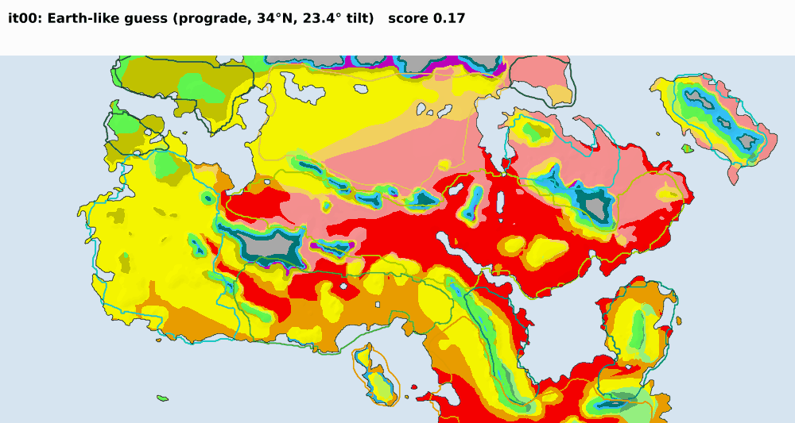

Click anywhere on land to see its climate through the local year, and which real places feel most alike.


Click or tap the mapBars: precipitation per month (the Holy Days bar covers 15 days). Line: mean temperature; band: warmest and coldest week. Dashed line: closest real-world match.
The unknowns the calibration searched for, chosen so the simulated climate best reproduces your painted zones.
How well each painted zone's climate rule is met (1 = everywhere).
Ten months of 35 days plus 15 Holy Days. With the winter solstice on Titian Marigold 23, every month's season name matches the sun.
Each frame is one five-day week. Arrows are surface winds.


What changes if the planet were different. Outlines mark your painted zones.



